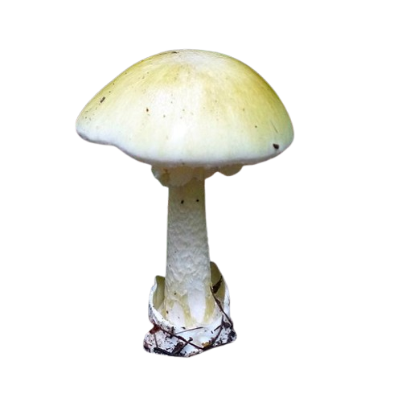
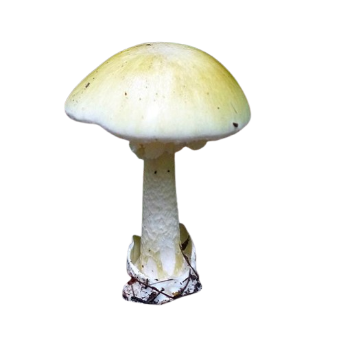

Descripción morfológica
Amanita phalloides, conocida como "oronja verde" o "hongo de la muerte", es un basidiomiceto mortal de la familia Amanitaceae. Su sombrero (5-15 cm de diámetro) varía de verde oliva a amarillento, con superficie lisa y margen estriado. Las láminas son libres, blancas y apretadas. El pie (8-15 cm) es blanco con escamaciones verdosas, presenta un anillo membranoso y una volva basal en forma de saco bien desarrollada. La carne es blanca, con olor ligeramente dulce en ejemplares jóvenes que se vuelve fétido en la madurez.
Características distintivas
- Volva: Estructura en copa que envuelve la base (clave diagnóstica).
- Anillo: Blanco, persistente y colgante como una falda.
- Esporas: Elipsoidales, lisas, 8-11 × 7-9 µm, blancas en masa.
- Confusiones: Similar a Russula virescens (comestible, sin volva ni anillo).
Distribución y hábitat
Originaria de Europa, se ha naturalizado en América, África y Australia asociada a robles (Quercus), hayas (Fagus) y castaños (Castanea). Crece en bosques caducifolios y mixtos, preferentemente en suelos ácidos (pH 4-6). Fructifica de verano a otoño, individualmente o en pequeños grupos. Su micelio forma ectomicorrizas obligadas, siendo indicador de ecosistemas forestales maduros. En España es especialmente abundante en la cornisa cantábrica y sistemas montañosos.
Condiciones ecológicas
- Asociaciones: 90% de casos bajo robles y encinas.
- Clima: Prefiere humedad relativa >70% y temperaturas 15-25°C.
- Dispersión: Las esporas son transportadas por el viento hasta 100 m del cuerpo fructífero.
Toxicidad y mecanismo de acción
Contiene dos grupos de toxinas mortales: amatoxinas (α-amanitina) y falotoxinas. La α-amanitina (0.2-0.4 mg/g de hongo fresco) inhibe irreversiblemente la ARN polimerasa II, bloqueando la síntesis proteica. Una sola seta (30 g) puede contener dosis letal para un adulto (LD50 = 0.1 mg/kg). Los síntomas aparecen en 3 fases: 1) gastrointestinal (6-24 h), 2) remisión aparente (24-72 h), y 3) fallo hepático (3-6 días). La mortalidad alcanza el 30% sin tratamiento, requiriendo trasplante hepático en casos graves.
Principales toxinas
- α-amanitina: Responsable del 90% de la toxicidad (resistente a cocción y secado).
- β-amanitina: Menor potencia pero mayor estabilidad térmica.
- Faloidina: Destructora de hepatocitos (no absorbible por vía oral).
Diagnóstico y tratamiento
| Método | Efectividad |
|---|---|
| Test de Meixner | Detección rápida de amatoxinas (falsos positivos 15%) |
| Silibinina IV | Antídoto (20 mg/kg/día, bloquea captación hepática) |
| Carbón activado | Eficaz en primeras 4 horas (1 g/kg cada 4 h) |
Prevención y reconocimiento
- Claves visuales: Siempre buscar volva en forma de saco y anillo.
- Error común: 60% de intoxicaciones ocurren al confundirla con Amanita caesarea joven.
- Recomendaciones: No recolectar setas con volva entre especies comestibles.
Historia y casos relevantes
- Responsable del 90% de muertes por micetismo en Europa.
- En 1740, el emperador Carlos VI murió tras consumirla confundida con Amanita caesarea.
- En 2012, un brote en California afectó a 14 personas (3 trasplantes hepáticos).
Investigación reciente
- Estudios con anticuerpos monoclonales contra α-amanitina (fase preclínica).
- Uso de técnicas PCR para detectar ADN en muestras gástricas.
- Nuevos protocolos con N-acetilcisteína y penicilina G como coadyuvantes.